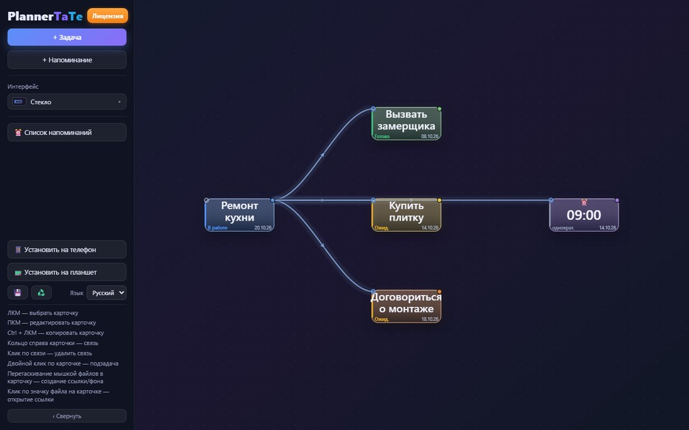
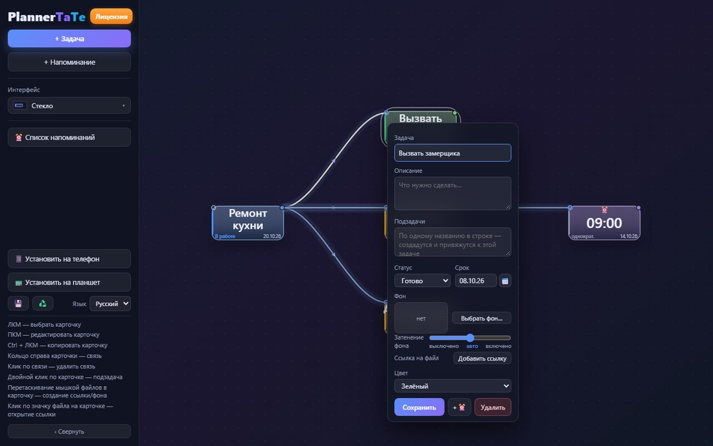
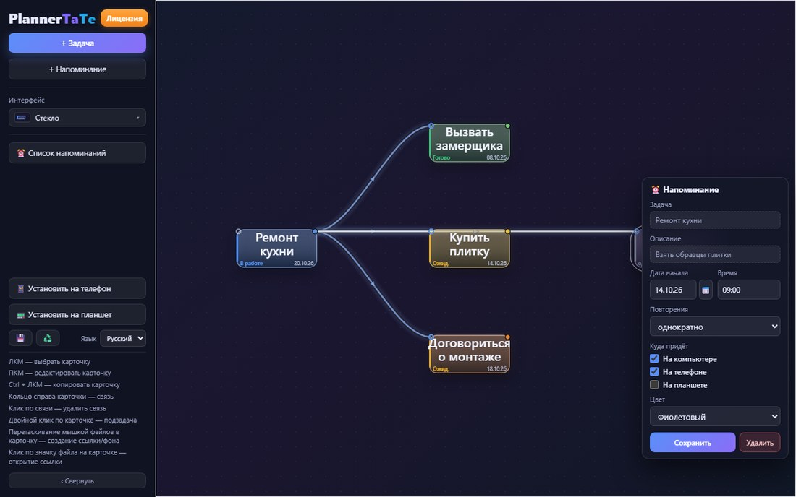
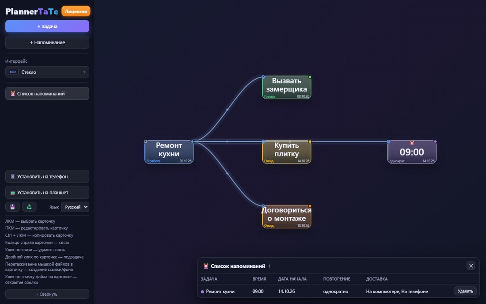
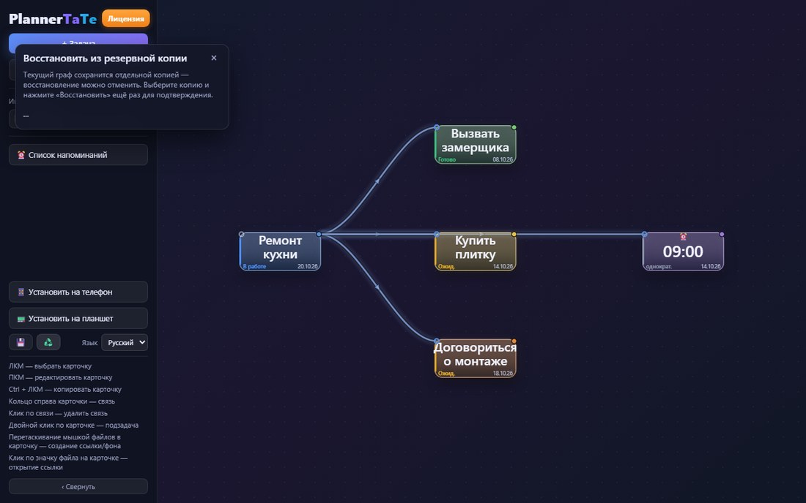
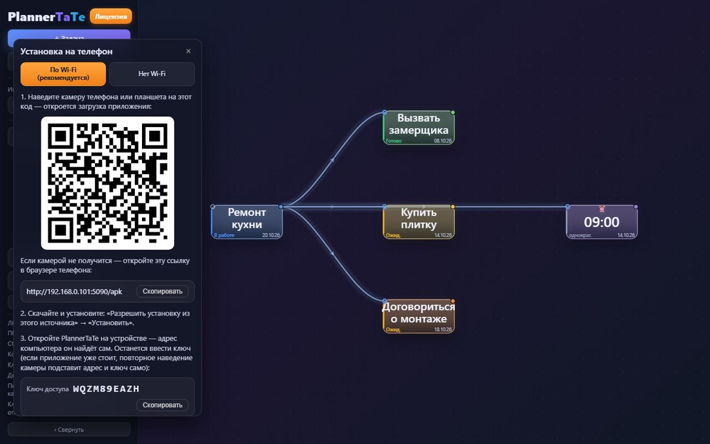
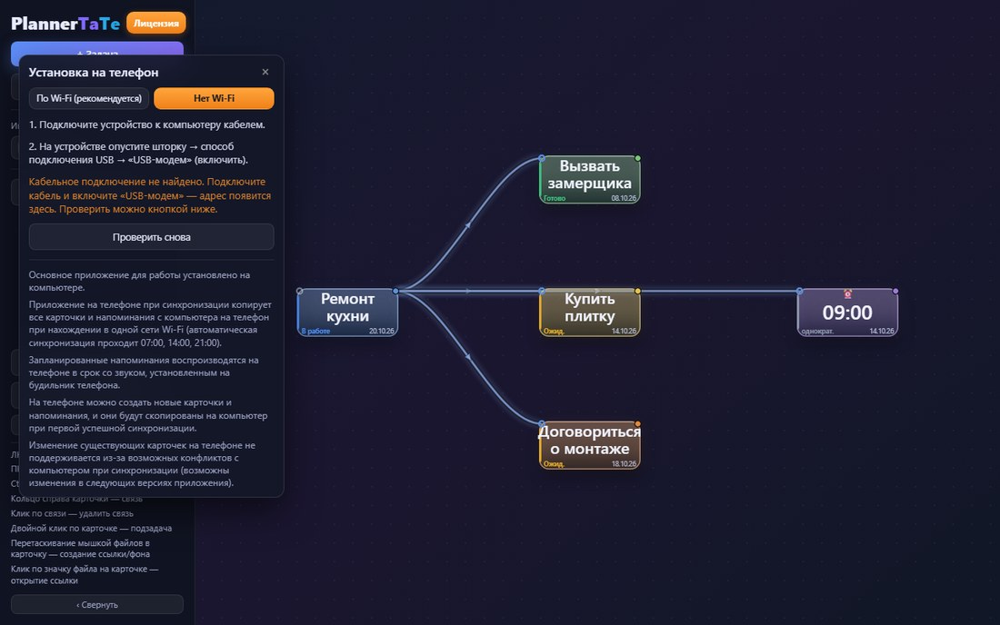
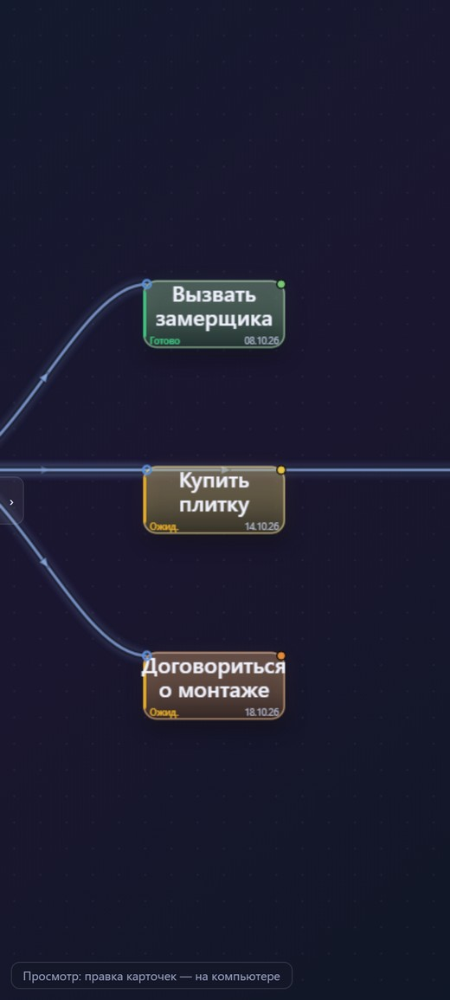
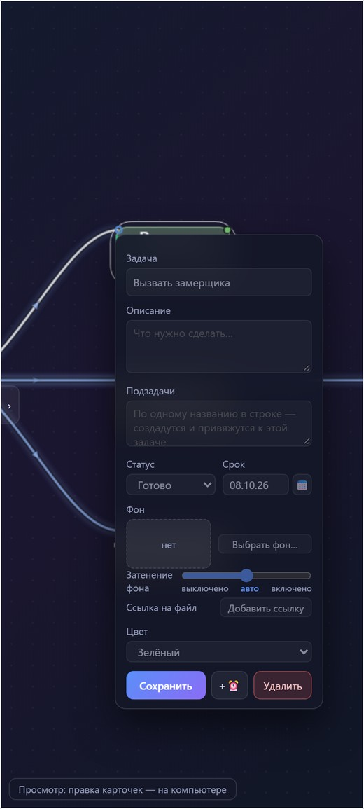

Планировщик задач, в котором дела — карточки на большом холсте.
Карточки соединяются стрелками («это часть того», «сначала это, потом то»), у них есть сроки и напоминания.
Напоминания приходят не только на компьютер: телефон и планшет звонят будильником в нужный момент.
Компьютер Windows 10/11Устройство Android 8+Связь Wi-Fi или кабельВерсии 1.1 / 0.24
Что программа делает:
Показывает план целиком — карта вместо списка: видно, из чего состоит дело и что от чего зависит.
Не даёт забыть — срок и напоминание; компьютер показывает уведомление, телефон/планшет звонят будильником.
Держит устройства в курсе — на телефоне копия плана и новые задачи, всё сходится при синхронизации.
Карта задач на компьютере
Карточки соединены стрелками (связи). Цвет карточки и полоса слева — статус: готово, в работе, ожидает, проблема.

Карточка задачи
Название, описание, подзадачи (строка = отдельная связанная карточка), статус, срок, фон-картинка и до 5 ссылок на файлы.

Напоминания
Дата, время, повторение (однократно, ежедневно, еженедельно, по будням, ежемесячно) и куда присылать — галочками: компьютер, телефон, планшет.

Отдельная таблица «Список напоминаний»: что и когда сработает и куда придёт.

Резервные копии
💾 — копия графа одной кнопкой (хранятся 20 последних). ♻️ — восстановление: список копий с датами и двойное подтверждение; перед откатом текущий граф тоже сохраняется копией.

Установка на телефон и планшет

По Wi-Fi (рекомендуется): QR-код, ссылка и ключ доступа.

Нет Wi-Fi: вкладка с инструкцией по кабелю и «USB-модему».
Телефон и планшет
Та же карта, но в кармане: копия страницы работает без компьютера. Панель свёрнута, внизу — пометка «только просмотр»: правка карточек на компьютере.

Планировщик офлайн

Карточка в режиме просмотра
Как это работает
Компьютер — рабочее место. Карточки, связи и сроки создаются здесь; всё сохраняется само в файл графа.
Напоминания считает компьютер и показывает уведомлением Windows — даже если браузер закрыт (программа в трее).
Устройство получает готовое расписание при синхронизации и само ставит будильники; правила повторений считает компьютер, чтобы даты не расходились.
Устройство бывает телефоном или планшетом: телефон берёт канал «Телефон», планшет — «Планшет» (можно на оба сразу).
Синхронизация — по Wi-Fi или кабелю, автоматически 07:00 / 14:00 / 21:00 и вручную. С компьютера — карточки и расписание, с устройства — новые задачи и напоминания.
Технические детали
Компьютер
Windows 10/11 и браузер; приложение живёт в трее, автозапуск по желанию
Устройство
Android 8.0 и новее — телефон или планшет
Связь
Wi-Fi или кабель (USB-модем)
Данные
локально, в %APPDATA%\PlannerTaTe; из сети — только с ключом доступа
Версии
компьютер 1.1 · приложение 0.24 · языки: русский, английский